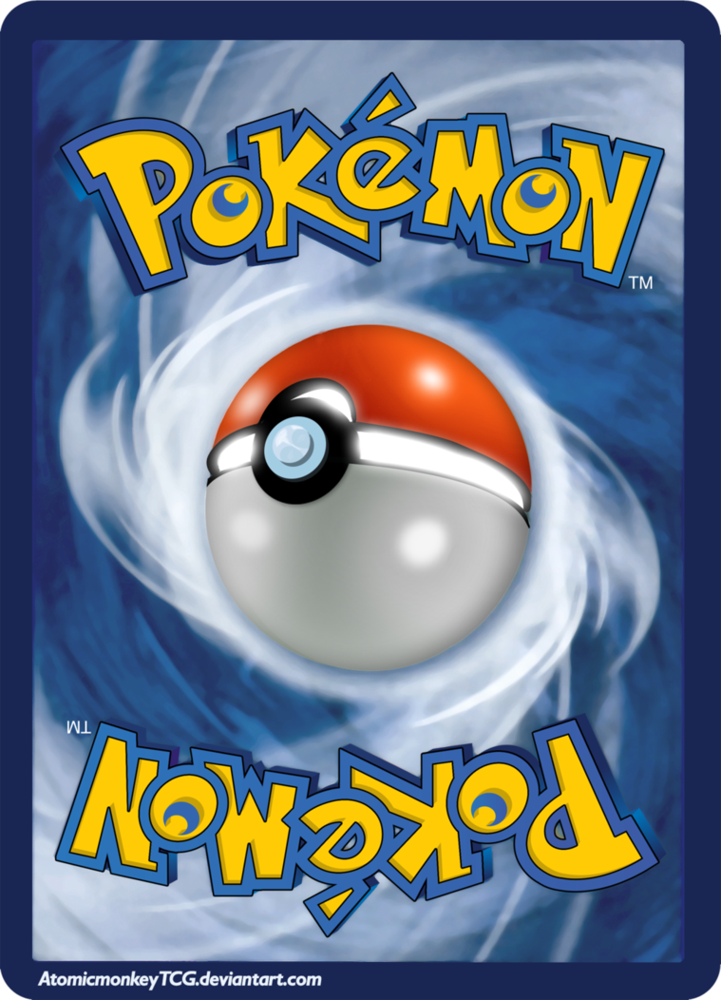
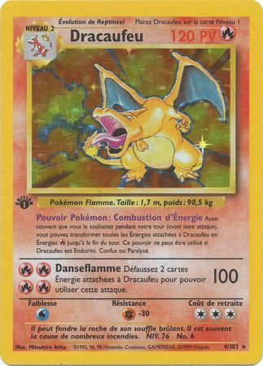

Jeu de cartes à collectionner Pokémon |
|||
|---|---|---|---|
Les règles |
|||
Pour jouer à Pokémon Trading Card Game, il faut : |
 | ||
Le deroulement | |||
Les cartes défaussées ne peuvent être remises en jeu, sauf si l'effet d'une carte en dit autrement. C'est là que vont les cartes déjà utilisées, les Pokémon K.O. et les cartes excédentaires de la main. Un tour commence quand un joueur pioche et se termine quand il attaque ou déclare qu'il termine son tour sans attaquer. Le moment entre deux tours, appelé « Contrôle Pokémon », permet de vérifier :
Les étapes peuvent être inversées, mais pas mélangées (comme ajouter des dégâts de Poison, appliquer un talent, puis vérifier si un Pokémon est toujours Endormi). |
|||
La carte Pokemon le plus chers du monde: |
|||
|---|---|---|---|
|  | |||
Devinez combien ca vaut ! (Tenir pour voir la reponse) |
|||
L'histoire du jeu Pokemon
Le jeu de cartes à collectionner Pokémon a été créé par Tsunekazu Ishihara, propriétaire de Creatures, à la suite du succès de Pocket Monsters en 19965,16,57. Le jeu de cartes a été exporté avec les autres jeux et la série à l'étranger à partir de début 1999, et a été édité par Wizards of the Coast21,58. Après la sortie de Pokémon Rubis et Saphir, Nintendo a récupéré la propriété des cartes et commencé à se charger de la distribution à travers sa société The Pokémon Company57. Le jeu de cartes Pokémon est pratiqué dans de nombreuses conventions et tournois au Japon, aux États-Unis et en Europe28. En 2007, un jeu de figurines à jouer et à collectionner a été lancé, et accueilli avec enthousiasme par les fans américains57.